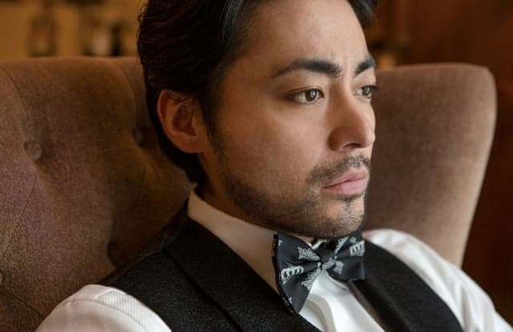
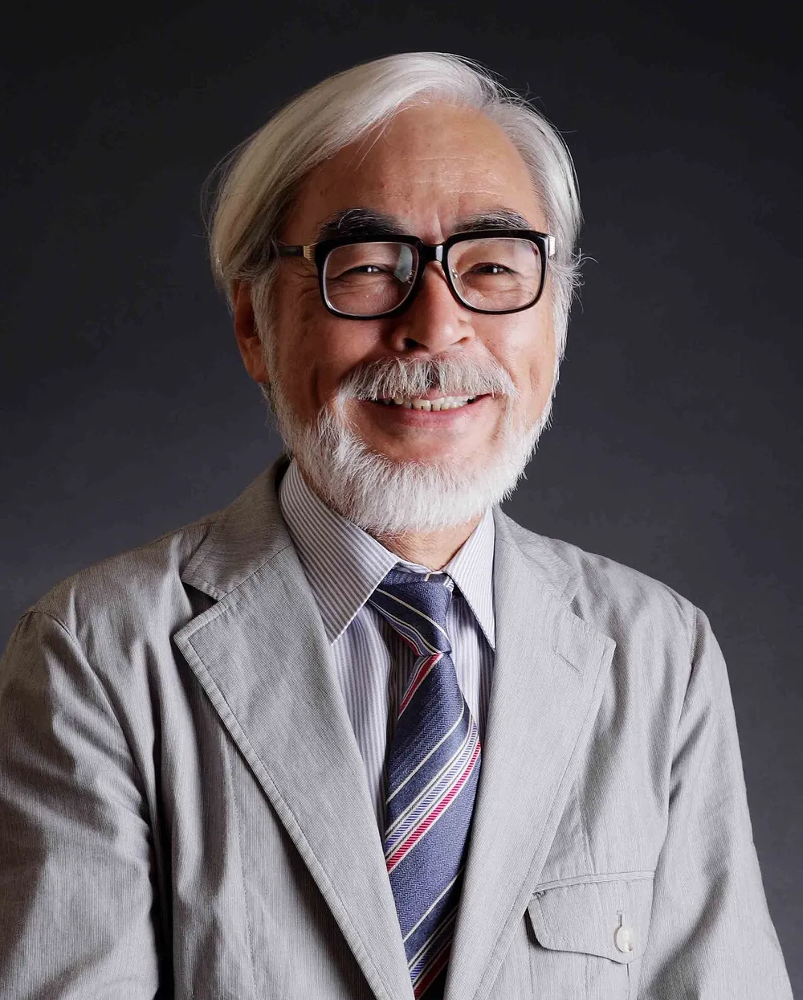
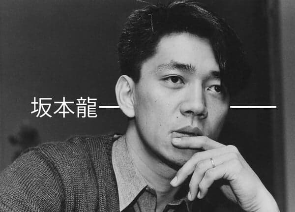
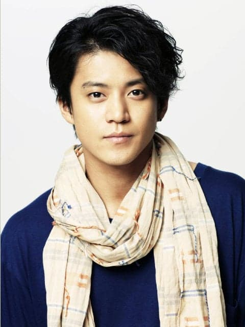
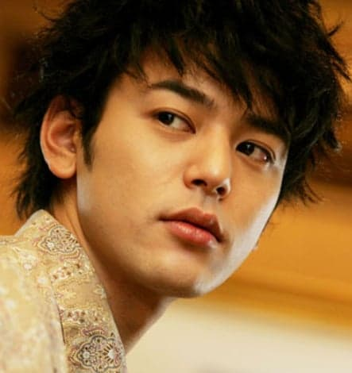
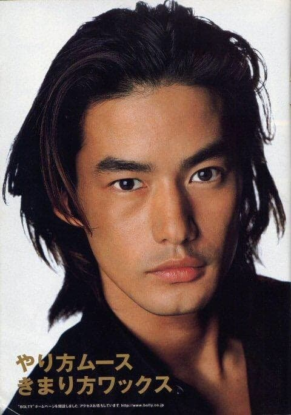
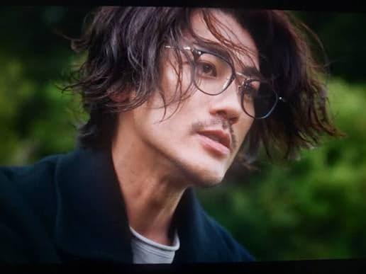
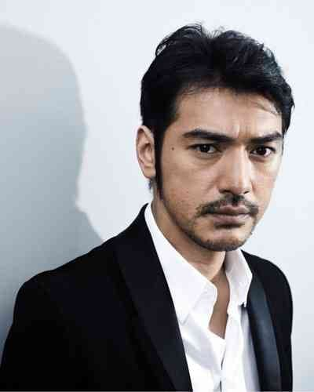
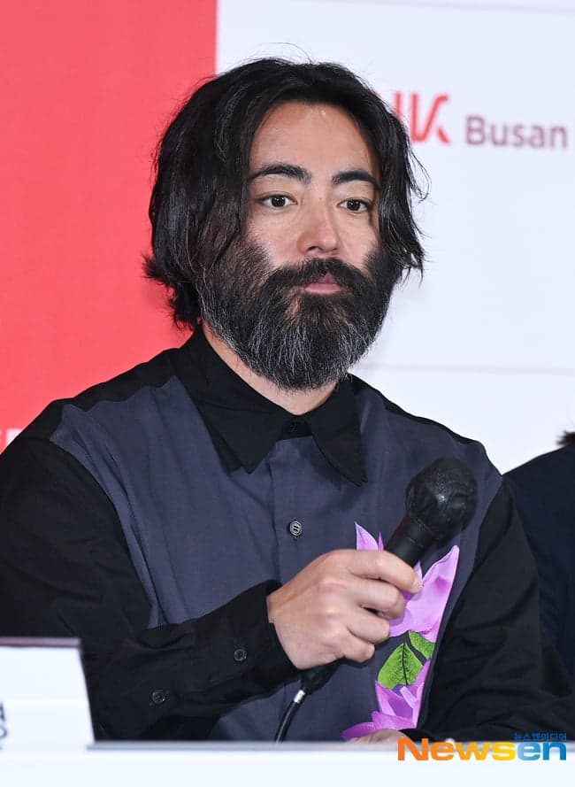

이목구비 찐하고 수염 많은 스타일
일본은 죠몬 때문에 이런 얼굴의 비율이 한국보다 높음









댓글
수집 당시 댓글 367개
· ㅇㅇ · 11.07 16:18:52
· ㅇㅇ · 11.07 16:25:46
· ㅇㅇ · 11.07 16:26:15
· ㅇㅇ · 11.07 16:28:57
· ㅇㅇ · 11.07 16:29:14
· ㅇㅇ · 11.07 16:29:43
· ㅇㅇ · 11.07 16:31:48
· ㅇㅇ · 11.07 16:32:21
· ㅇㅇ · 11.07 16:33:28
ㅇㅇ · 11.07 10:21:39
· ㅇㅇ · 11.07 10:22:13
ㅇㅇ · 11.07 10:30:30
· ㅇㅇ · 11.07 10:34:08
· ㅇㅇ · 11.07 10:35:38
· ㅇㅇ · 11.07 10:35:52
· ㅇㅇ · 11.07 10:36:07
· ㅇㅇ · 11.07 10:36:22
· ㅇㅇ · 11.07 10:37:16
· ㅇㅇ · 11.07 14:35:49
ㅇㅇ · 11.07 10:36:32
ㅇㅇ · 11.07 10:38:32
ㅇㅇ · 11.07 10:41:23
· ㅇㅇ · 11.07 16:55:48
· ㅇㅇ · 11.07 17:48:37
ㅇㅇ · 11.07 10:43:50
· ㅇㅇ · 11.07 11:04:44
ㅇㅇ · 11.07 10:45:52
ㅇㅇ · 11.07 10:58:50
· ㅇㅇ · 11.07 16:38:18
ㅇㅇ · 11.07 11:02:03
· ㅇㅇ · 11.07 15:08:37
· ㅇㅇ · 11.07 15:16:19
· ㅇㅇ · 11.07 15:17:23
· ㅇㅇ · 11.07 15:40:00
· ㅇㅇ · 11.07 16:27:23
ㅇㅇ · 11.07 11:05:49
ㅇㅇ · 11.07 11:09:39
· ㅇㅇ · 11.07 12:05:54
· ㅇㅇ · 11.07 12:24:11
· ㅇㅇ · 11.07 15:40:35
· ㅇㅇ · 11.07 16:01:01
· ㅇㅇ · 11.07 16:04:40
ㅇㅇ · 11.07 11:11:59
ㅇㅇ · 11.07 11:13:52
ㅇㅇ · 11.07 11:22:16
ㅇㅇ · 11.07 11:32:34
ㅇㅇ · 11.07 11:33:43
ㅇㅇ · 11.07 11:38:21
ㅇㅇ · 11.07 11:42:41
ㅇㅇ · 11.07 11:55:02
ㅇㅇ · 11.07 12:05:28
· ㅇㅇ · 11.07 15:40:54
ㅇㅇ · 11.07 12:08:04
ㅇㅇ · 11.07 12:10:06
· ㅇㅇ · 11.07 12:11:28
ㄹ · 11.07 12:10:23
ㅇㅇ · 11.07 12:12:40
· ㅇㅇ · 11.07 12:18:40
ㅇㅇ · 11.07 12:18:33
ㅇㅇ · 11.07 12:23:33
ㅇㅇ · 11.07 12:24:01
ㅇㅇ · 11.07 12:25:56
· ㅇㅇ · 11.07 15:41:47
익명 · 11.07 12:27:10
ㅇㅇ · 11.07 12:36:57
도태남 · 11.07 12:38:52
ㅇㅇ · 11.07 12:39:08
ㅇㅇ · 11.07 12:45:15
ㅇㅇ · 11.07 12:46:10
ㅇㅇ · 11.07 12:49:35
ㅇㅇ · 11.07 12:50:48
· ㅇㅇ · 11.07 12:50:56
· ㅇㅇ · 11.07 13:27:46
ㅇㅇ · 11.07 12:52:26
ㅇㅇ · 11.07 12:52:32
· ㅇㅇ · 11.07 13:27:40
ㅇㅇ · 11.07 12:53:53
ㅇㅇ · 11.07 12:56:30
ㅇㅇ · 11.07 13:47:37
ㅇㅇ · 11.07 13:53:05
ㅇㅇ · 11.07 13:56:07
ㅇㅇ · 11.07 14:01:48
et · 11.07 14:17:19
ㅇㅇ · 11.07 14:17:20
쌍도짱깨 · 11.07 14:20:07
ㅇㅇ · 11.07 14:26:35
ㅇㅇ · 11.07 15:15:32
· ㅇㅇ · 11.07 15:42:50
ㅇㅇ · 11.07 15:30:49
JungNu · 11.07 15:31:05
ㅇㅇ · 11.07 15:44:12
ㅇㅇ · 11.07 15:53:37
ㅇㅇ · 11.07 15:54:12
· ㅇㅇ · 11.07 15:54:24
ㅇㅇ · 11.07 16:12:55
· ㅇㅇ · 11.07 16:13:08
· ㅇㅇ · 11.07 16:16:26
암브로시오 · 11.07 16:59:04
ㅇㅇ · 11.07 17:23:49
ㅇㅇ · 11.07 18:20:57
ㅇㅇ · 11.07 06:57:27
ㅇㅇ · 11.07 07:03:09
· 성공감자 · 11.07 07:08:07
성공감자 · 11.07 07:07:25
ㅇㄷㅇ · 11.07 07:11:48
ㅇㅇ · 11.07 07:18:11
ㅇㅇ · 11.07 07:18:15
ㅇㅇ · 11.07 07:21:39
ㅇㅇ · 11.07 07:25:01
ㅇㅇ · 11.07 07:46:21
ㅇㅇ · 11.07 07:48:40
ㅇㅇ · 11.07 07:48:52
ㅇㅇ · 11.07 07:53:32
ㅇㅇ · 11.07 07:56:38
ㅇㅇ · 11.07 08:12:37
· ㅇㅇ · 11.07 11:47:18
ㅇㅇ · 11.07 08:17:05
린잘알 · 11.07 08:19:03
ㅇㅇ · 11.07 08:21:01
ㅇㅇ · 11.07 08:26:37
ㅇ · 11.07 08:29:11
도깨비빤스 · 11.07 08:32:24
ㅇㅇ · 11.07 08:36:47
· ㅇㅇ · 11.07 08:37:52
ㅇㅇ · 11.07 08:39:53
· ㅇㅇ · 11.07 08:41:21
· つついあやめのおっと · 11.07 10:07:09
ㅇㅇ · 11.07 08:40:48
· ㅇㅇ · 11.07 08:42:06
· ㅇㅇ · 11.07 08:44:51
· ㅇㅇ · 11.07 10:35:53
ㅇㅇ · 11.07 08:43:46
ㅇㅇ · 11.07 08:50:15
· ㅇㅇ · 11.07 09:44:13
· ㅇㅇ · 11.07 09:46:20
· ㅇㅇ · 11.07 10:52:47
· ㅇㅇ · 11.07 11:20:10
· ㅇㅇ · 11.07 11:21:25
· ㅇㅇ · 11.07 11:22:40
· ㅇㅇ · 11.07 11:42:27
· ㅇㅇ · 11.07 11:44:09
원또 · 11.07 08:51:38
ㅇㅇ · 11.07 08:51:49
ㅇㅇ · 11.07 08:53:41
ㅇㅇ · 11.07 09:04:05
· ㅇㅇ · 11.07 09:04:27
· ㅇㅇ · 11.07 09:26:26
ㅇㅇ · 11.07 09:23:54
· ㅇㅇ · 11.07 11:48:49
ㅇㅇ · 11.07 09:27:22
ㅇㅇ · 11.07 09:29:35
· ㅇㅇ · 11.07 11:46:46
· ㅇㅇ · 11.07 13:10:51
· ㅇㅇ · 11.07 17:42:37
ㅇㅇ · 11.07 09:35:41
· ㅇㅇ · 11.07 09:36:24
· ㅇㅇ · 11.07 09:49:09
· ㅇㅇ · 11.07 09:52:12
· ㅇㅇ · 11.07 09:53:27
· ㅇㅇ · 11.07 09:53:52
· ㅇㅇ · 11.07 09:54:38
· ㅇㅇ · 11.07 09:54:47
· ㅇㅇ · 11.07 09:55:32
· ㅇㅇ · 11.07 09:56:39
· ㅇㅇ · 11.07 09:56:42
· ㅇㅇ · 11.07 09:56:43
· ㅇㅇ · 11.07 09:57:21
· ㅇㅇ · 11.07 09:57:52
· ㅇㅇ · 11.07 09:58:09
· ㅇㅇ · 11.07 09:58:40
· ㅇㅇ · 11.07 09:59:44
· ㅇㅇ · 11.07 09:59:51
· ㅇㅇ · 11.07 09:59:59
· ㅇㅇ · 11.07 10:00:46
· ㅇㅇ · 11.07 10:01:24
· ㅇㅇ · 11.07 10:01:43
· ㅇㅇ · 11.07 10:03:19
· ㅇㅇ · 11.07 10:03:48
· ㅇㅇ · 11.07 10:04:02
· ㅇㅇ · 11.07 10:07:14
· つついあやめのおっと · 11.07 10:08:52
· ㅇㅇ · 11.07 10:11:28
· ㅇㅇ · 11.07 10:19:39
· ㅇㅇ · 11.07 12:13:44
· ㅇㅇ · 11.07 12:57:58
· ㅇㅇ · 11.07 14:01:12
ㅇㅇ · 11.07 09:42:42
ㅇㅇ · 11.07 09:47:11
ㅇㅇ · 11.07 09:52:28
ㅇㅇ · 11.07 10:21:14
· ㅇㅇ · 11.07 10:21:34
· ㅇㅇ · 11.07 10:21:49
· ㅇㅇ · 11.07 10:22:00
· ㅇㅇ · 11.07 10:22:18
· ㅇㅇ · 11.07 10:22:31
· ㅇㅇ · 11.07 15:14:04
· ㅇㅇ · 11.07 15:22:16
· ㅇㅇ · 11.07 15:27:39
· ㅇㅇ · 11.07 15:30:21
· ㅇㅇ · 11.07 16:17:42
· ㅇㅇ · 11.07 08:05:31
ㅇㅇ · 11.07 03:07:45
ㅇㅇ · 11.07 03:07:56
ㅇㅇ · 11.07 03:08:03
ㅇㅇ · 11.07 03:09:26
ㅇㅇ · 11.07 03:15:30
ㅇㅇ · 11.07 03:16:15
· ㅇㅇ · 11.07 07:44:47
· 해석가 · 11.07 08:09:49
ㅇㅇ · 11.07 03:16:57
ㅇㅇ · 11.07 03:17:01
ㅇㅅㅇ · 11.07 03:21:19
ㅇㅇ · 11.07 03:22:32
· ㅇㅇ · 11.07 08:09:51
ㅇㅇ · 11.07 03:22:41
진짜 원숭이 WWW
ㅇㅇ · 11.07 03:27:42
ㅇㅇ · 11.07 03:28:07
ㅇㅇ · 11.07 03:30:30
· ㅇㅇ · 11.07 03:31:46
· ㅇㅇ · 11.07 03:33:33
· ㅇㅇ · 11.07 03:35:51
· ㅇㅇ · 11.07 03:38:26
· ㅇㅇ · 11.07 03:41:12
· ㅇㅇ · 11.07 04:24:03
· ㅇㅇ · 11.07 04:45:07
· ㅇㅇ · 11.07 07:20:41
· ㅇㅇ · 11.07 08:02:10
· ㅇㅇ · 11.07 11:52:24
ㅇㅇ · 11.07 03:30:52
· ㅇㅇ · 11.07 06:43:58
· ㅇㅇ · 11.07 09:23:07
ㅇㅇ · 11.07 03:31:24
ㅇㅇ · 11.07 03:32:20
ㅇㅇ · 11.07 03:38:11
· ㅇㅇ · 11.07 03:43:02
· ㅇㅅㅇ · 11.07 03:44:09
· 클갤러 · 11.07 04:33:07
· ㅇㅇ · 11.07 07:12:22
· ㅇㅇ · 11.07 08:29:30
· ㅇㅇ · 11.07 08:50:04
ㅇㅇ · 11.07 03:39:16
ㅇㅇ · 11.07 03:39:46
ㅇㅇ · 11.07 03:44:34
ㅇㅇ · 11.07 03:46:17
?
ㅇㅇ · 11.07 03:46:28
· ㅇㅇ · 11.07 03:48:16
· ㅇㅇ · 11.07 06:42:58
· ㅇㅇ · 11.07 07:18:11
· ㅇㅇ · 11.07 07:58:58
· ㅇㅇN · 11.07 10:03:52
· ㅇㅇ · 11.07 12:05:54
ㅇㅇ · 11.07 03:47:26
· ㅇㅇ · 11.07 08:43:42
· ㅇㅇ · 11.07 12:13:45
ㅇㅇ · 11.07 03:52:32
도떼녀 · 11.07 03:53:37
· 도떼녀 · 11.07 03:54:01
ㅇㅇ · 11.07 03:56:34
ㅇㅇ · 11.07 03:57:08
ㅇㅇ · 11.07 03:58:21
· つついあやめのおっと · 11.07 10:00:45
· つついあやめのおっと · 11.07 10:02:55
ㅇㅇ · 11.07 03:59:54
쉔 · 11.07 04:00:43
ㅇㅇ · 11.07 04:03:07
ㅇㅇ · 11.07 04:04:09
· ㅇㅇ · 11.07 04:04:19
ㅇㅇ · 11.07 04:05:58
쇼탕제 · 11.07 04:07:43
· ㅇㅇ · 11.07 07:41:30
· 쇼탕제 · 11.07 15:46:08
ㅇㅇ · 11.07 04:14:46
ㅇㅇ · 11.07 04:15:43
ㅇㅇ · 11.07 04:19:45
보이드 · 11.07 04:29:54
· ㅇㅇ · 11.07 09:53:59
ㅇㅇ · 11.07 04:32:26
ㅇㅇ · 11.07 04:49:10
ㅇㅇㅇ · 11.07 04:53:33
ㅇㅇ · 11.07 04:55:34
슈말햄 · 11.07 05:15:26
ㅇㅇ · 11.07 05:28:20
ㅇㅇ · 11.07 05:32:25
ㅇㅇ · 11.07 05:54:57
ㅇㅇ · 11.07 06:02:29
dipliti · 11.07 06:07:28
· ㅇㅇ · 11.07 08:34:27
123 · 11.07 06:10:49
ㅇㅇ · 11.07 06:11:43
ㅇㅇ · 11.07 06:14:12
ㅇㅇ · 11.07 06:18:01
ㅇㅇ · 11.07 06:20:11
ㅇㅇ · 11.07 06:24:34
ㅇㅇ · 11.07 06:25:54
ㅇㅇ · 11.07 06:26:42
ㅇㅇ · 11.07 06:30:18
ㅇㅇ · 11.07 06:43:51
· ㅇㅇ · 11.07 07:18:36
ㅇㅇ · 11.07 06:45:48
ㅇㅇ · 11.07 06:55:12
ㅇㅇ · 11.06 21:11:10
· ㅇㅇ · 11.06 21:12:01
· ㅇㅇ · 11.07 02:56:54
· ㅇㅇ · 11.07 02:57:13
· ㅇㅇ · 11.07 03:21:27
· ㅇㅇ · 11.07 03:32:22
· Oo · 11.07 03:52:27
· ㅇㅇ · 11.07 03:56:22
· ㅇㅇ · 11.07 13:28:05
· ㅇㅇ · 11.07 13:28:19
· ㅇㅇ · 11.07 15:03:47
SEX머신 · 11.06 21:11:18
· ㅇㅇ · 11.06 21:11:59
· ㅇㅇ · 11.06 21:12:16
· ㅇㅇ · 11.06 21:12:21
· ㅇㅇ · 11.06 21:12:31
· ㅇㅇ · 11.06 21:12:33
· 형기아님 · 11.06 21:12:40
· ㅇㅇ · 11.06 21:36:31
· ㅇㅇ · 11.07 02:46:46
· ㅇㅇ · 11.07 02:57:01
· ㅇㅇ · 11.07 03:09:26
· ㅇㅇ · 11.07 04:05:44
· ㅇㅇ · 11.07 04:25:54
· ㅇㅇ · 11.07 04:32:43
· ㅇㅇ · 11.07 05:23:58
· ㅇㅇ · 11.07 08:44:11
ㅇㅇ · 11.06 21:11:35
형기아님 · 11.06 21:13:18
ㅇㅇ · 11.06 21:13:25
알부자 · 11.06 21:15:31
커다라타요 · 11.06 21:15:44
· 커다라타요 · 11.06 21:16:09
· ㅇㅇ · 11.06 21:16:34
· 커다라타요 · 11.06 21:19:04
· ㅇㅇ · 11.06 21:19:37
· ㅇㅇ · 11.06 21:32:48
· ㅇㅇ · 11.06 21:55:41
ㅇㅇ · 11.06 21:15:55
ㅇㅇ · 11.06 21:17:30
· ㅇㅇ · 11.06 21:17:52
· ㅇㅇ · 11.06 22:07:47
ㅇㅇ · 11.06 21:17:50
· ㅇㅇ · 11.06 21:18:06
ㅇㅇ · 11.06 21:24:31
ㅇㅇ · 11.06 21:27:04
· ㅇㅇ · 11.07 03:05:44
ㅇㅇ · 11.06 21:31:28
· ㅇㅇ · 11.06 21:32:18
ㅇㅇ · 11.06 21:34:20
ㅇㅇ · 11.06 21:50:05
ㅇㅇ · 11.07 02:47:36
· ㅇㅇ · 11.07 03:33:24
ㅇㅇ · 11.07 02:48:23
ㅇㅇ · 11.07 02:50:55
ㅇㅇ · 11.07 02:52:20
· ㅇㅇ · 11.07 02:53:51
· ㅇㅇ · 11.07 02:58:31
· つついあやめのおっと · 11.07 07:43:24
ㅇㅇ · 11.07 02:57:56
ㅇㅇ · 11.07 03:03:56
· ㅇㅇ · 11.07 03:23:58
· ㅇㅇ · 11.07 06:10:39
ㅇㅇ · 11.07 03:04:24
ㅇㅇ · 11.07 03:05:45
토라만 · 11.07 03:07:24
· ㅇㅇ · 11.07 06:43:22